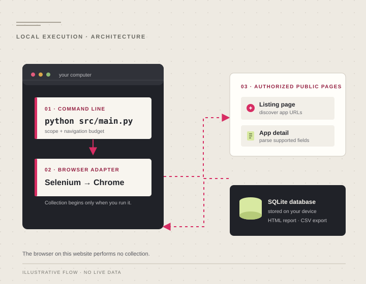

Explicit crawl scope
Select apps or games and limit categories, subcategories, saved apps, and browser navigations.
Independent local software
A Python and Selenium crawler for permitted public Myket app metadata, saved to a SQLite database on your own computer.
You run the crawler yourself. This website does not crawl Myket or process datasets.

Runs on your machine
Start every collection deliberately.
Bounded navigation
Set conservative page limits.
Local persistence
Keep the SQLite dataset in your care.
A clear path from page to database
Myket Crawler is a command-line tool, not a hosted service. It opens a browser only when you start an explicitly bounded collection.
Install Python dependencies and a supported Chrome or Chromium browser.
Select the apps section and set category, app, and navigation limits.
Selenium navigates public listing and detail pages; the parser checks package identity and supported fields.
Records are persisted to SQLite. You can generate a Persian RTL report or a spreadsheet-safe CSV on your machine.
Designed for deliberate collection
The crawler keeps collection, storage, and offline review in one local workflow. It is best-effort and does not promise complete marketplace coverage.
Select apps or games and limit categories, subcategories, saved apps, and browser navigations.
Store supported app metadata in SQLite with a stable package and source identity.
Create a standalone RTL report or formula-safe CSV from a local database, with developer contacts omitted from both exports.
Saved rows remain intact when a run stops early. Repeated detail failures stop the run instead of continuing indefinitely.
Start offline, then decide
First try synthetic records without Selenium, Chrome startup, or network access. When ready, install the browser dependencies before any permitted live crawl.
Requires Python 3.9 or newer.
git clone https://github.com/AlirezaBelal/myket-crawler.git
cd myket-crawlerUse the commands for your shell.
py -3 -m venv .venv
.\.venv\Scripts\python.exe -m pip install -r requirements.txtpython3 -m venv .venv
. .venv/bin/activate
python -m pip install -r requirements.txtLive collection also requires Chrome or Chromium. Selenium Manager can locate a compatible driver on supported systems.
Creates 12 fictional records in an ignored local database.
python src/main.py --demo
# Open data/demo-report.htmlNo browser automation or network connection is started. The demo will not overwrite an existing default database.
Only continue after confirming that the pages and data you intend to access are permitted. Review applicable Myket terms and access rules, use conservative delays, and never bypass authentication, CAPTCHA, rate limits, or anti-bot controls.
python src/main.py --section apps --category-limit 1 \
--subcategory-limit 1 --max-apps 3 --max-navigations 20This example targets at most three successful saves and twenty calls to Selenium driver.get(). That limit does not cap browser subresources, redirects, or requests initiated by a page. A capped or partially failed run exits with status 1 and keeps saved records.
The database defaults to data/myket_results.db. Raw records may contain optional developer contact fields; keep the database private and review data-handling obligations before sharing it.
A small, inspectable stack
Python CLI defines the run and its limits. Selenium drives a local Chrome or Chromium browser. The parser extracts supported metadata, and SQLite stores the records on the same computer.
Optional HTML and CSV outputs are generated from that local database. The hosted site is documentation only: it contains no crawler runtime, database, upload form, analytics, or marketplace connection.
Read the supported-scope notesResponsible use
Your machine. Your scope. Your data.
Review setup, safety limits, and supported commands before running a collection.